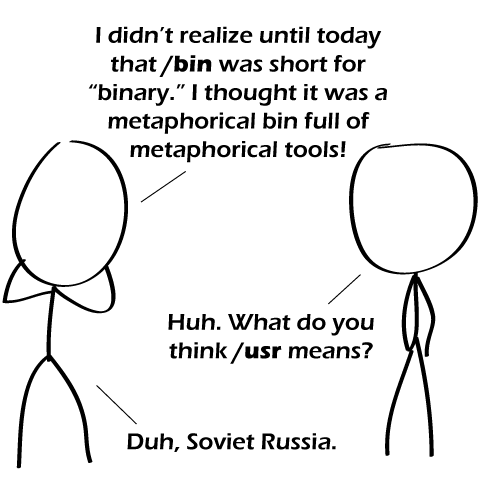

Comic JK 713
When I Feel Like It
⇤
<
?
>
⇥

⇤
<
?
>
⇥
Forum
.
RSS
.
Digg
.
Facebook
.
Reddit
.
Twitter
.
Stumbleupon
Enter your thoughts on number 713 here. Please, no spamming, trolling, phreaking || cat /etc/troll.conf >so, I can phreak or troll, just not both. >>fix'd /usr is UNIX System Resources fyi > And because we all pronounce it "user" that's what I always assumed it was... /usr/bin is the /bin for user apps etc. >>Suddenly the missing e makes so much more sense :D >>>"UNIX System Resources" is a backronym. Historyically, /usr was used for user directories. Then, non-critical files started getting moved there so that the root partition could be kept small. Thus, /usr came to contain its own /bin, /lib and so on. Eventually home directories were moved out to /home and many other files were moved out of /usr into /var, /opt, /srv, /etc. Some unices still put home dirs in /usr, minix and some bsds for example. >>>>Wow. Awesome. Thank you. Why does this not get explained to more people in more places? anyone else type ls into windows CP. All I need is ipconfig and I still end up trying ls. >I do that too. I always type ls before I remember its dir (probably because its one less letter) >>What I do is I try ls about five times (to make sure I spelt it right I guess) and then give up and Google for the correct command. Kicker: I've used Windows as my main OS all but ~3 months of my life, and even then did not often use ls. It just makes so much more sense! >>>I used MS-DOS for years before I even learned Linux exists (those were the pre-Internet years...), so if I'm now using Linux I always have to remind me not to type dir but ls instead... >>>>So I loaded a collection of ports of ls, cat, and the like into a Windows directory, and put it in my search path. Of course, now I keep forgetting that the fact ls works in a Windows console is peculiar to my machine. >>>>>Cygwin anyone? >>>>on my opensuse box, '..' is a shortcut for 'cd ..'. Not on my windows, though. >>>>>on my computer, "ls" is "ls -1 -A -F -G -h -l", "." is "ls", and ".." is "cd ..; ." >>>>>>"..." hmm, maybe, just maybe, our brain finds it more logical to express a wish/command as a verb and not as a noun? >I have a batch script called ls.bat which does a "dir" instead and then reminds me I'm an idiot. >>Yeah, but at least a creative one! >>I like this. >>Hmm. I suppose it works for trivial uses. But you can't really pass it any flags like ls -l You mean to say that cd ./bin does not take you to a "bin" of sorts. Come on! I just opened a terminal on this Mac and maneuvered into the bin. Sure enough an ls finds all kinds of junk there. It's a bin to keep stuff that doesn't belong anywhere else. I have Cygwin on a flash drive /specifically/ so I have at least some idea of how to do things in a Windows world. Funny, you think it'd be the other way around... Considering that /bin has binaries and scripts, a bin full of tools makes more sense than an abbreviation of binary. Does anybody still know what /etc stands for? >>Easily Tricked Configs oh you silly people... /usr/ is short for "User". it's that secluded little corner when you go to smoke your crack during recess.